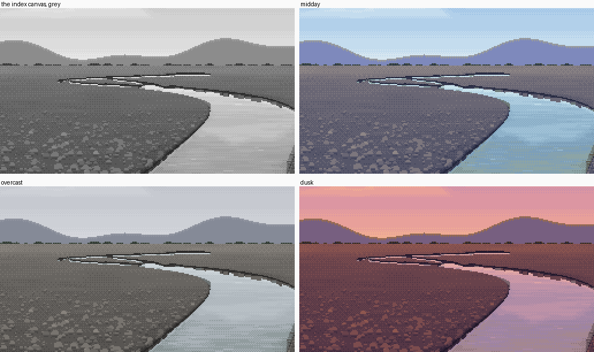
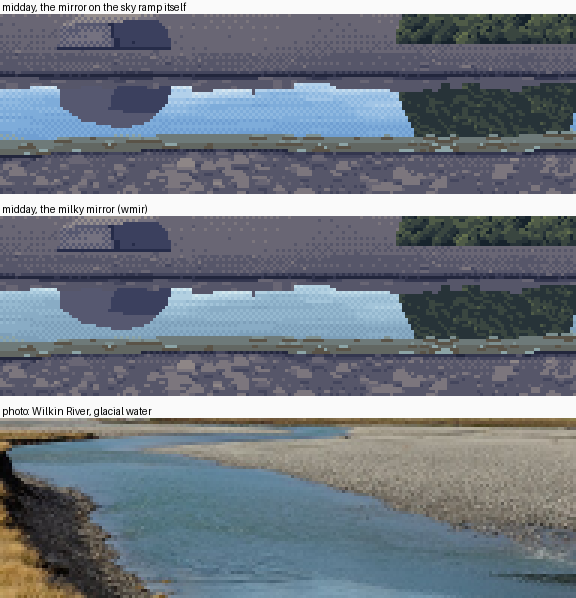
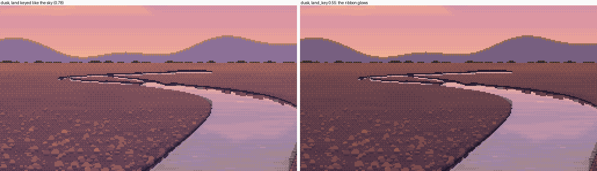
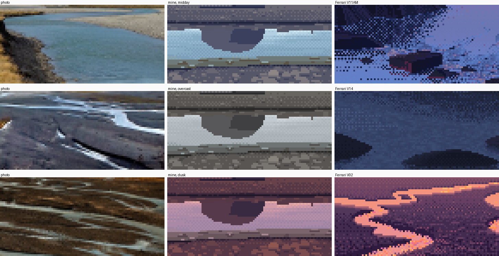

5. Colour: the palette is the light, and glacial water is a clouded mirror
What it's for. Turning a proved grey painting into midday, overcast and dusk without repainting a pixel, and giving glacial water its own colour while keeping the rule that water is the sky. The critic called this water colour "the strongest in the studio", and the dusk channel below was judged my best image.
Code: code/colour.py (the whole thing is 104 lines), code/s4_colour.py, render_designed in code/s5_braid.py.

One index canvas (render_designed('low', 'dusk')), shown in its grey palette and under three hours' palettes. Nothing was repainted. figs.py fig_relight.
Step 1. Paint in grey, as indices, and keep the index canvas
Everything in how-tos 2–4 paints an index canvas in a grey palette, with named ramps: sky, gravel, the water tints, grass, earth, the milky mirror and so on. The master-copy student found the reason in Ferrari's own files: in Mirror Pond and Mountain Stream the morning and afternoon versions have identical index maps. The light is the palette, and the index map is the form.
So colour is a function from the grey palette to a coloured one with the same layout. Each colour keeps the luminance its index proved in grey, scaled by the hour's key, and takes its hue from a walk from the ambient light (in the shadows) to the sun (in the lights), times the material's albedo:
for name, idx in Pgrey.ramps.items():
greys = Pgrey.arr[idx][:, 0].astype(float)
...
alb = _lin(ALBEDO.get(name, (128, 128, 128)))
g0, g1 = greys.min(), greys.max()
for k, i in enumerate(idx):
t = (greys[k] - g0) / max(g1 - g0, 1)
light = amb * (1 - t ** 1.3) + sun * t ** 1.3 # shadows to ambient, lights to sun
c = alb * light
Yt = _Y(_lin((greys[k],) * 3)) * L.get('land_key', L['key']) * (1 + L['lift'] * (1 - t))
...
cols[i] = _srgb(fit_lum(c, Yt))
fit_lum scales a linear colour to a target luminance. If that would clip, it desaturates toward white instead of shifting the hue. Distant ramps (ridge, scrub) are mixed 30–60% toward the horizon sky for aerial perspective.
Step 2. The sky ramp is hand-set per hour, and the water reuses it
'midday': dict(sun=(255, 246, 226), amb=(126, 146, 232), key=1.0,
sky=['#e6eef2', '#d6e6f0', '#c4dcee', '#b2d0ea', '#a0c4e6', '#8eb8e0', '#7eacda', '#709fd2'], ...),
'overcast': dict(sun=(214, 216, 222), amb=(170, 176, 188), key=0.92,
sky=['#dcdee2', '#d4d6dc', '#cdd0d6', '#c6c9d0', '#bfc2ca', '#b8bbc4', '#b1b4be', '#aaaeb8'], ...),
'dusk': dict(sun=(255, 160, 104), amb=(120, 100, 170), key=0.78, land_key=0.55,
sky=['#f6c09a', '#f0ae94', '#e8a09a', '#dc96a2', '#cc90aa', '#bc8cb0', '#aa88b4', '#9a84b6'], ...),
The dusk ramp is his near-isovalue hue walk: peach at the horizon to lilac higher up. The water quantizes onto the same steps (how-to 2), so far water, which mirrors low sky, turns peach, and near water turns lilac. That's V02's ribbons again, arrived at from the other end.
Step 3. Glacial water is the sky's steps clouded by rock flour
Reusing the sky ramp exactly gave me swimming-pool blue channels at midday. Every glacial photo shows a muted grey-turquoise. Rock flour clouds the mirror. So the water gets a second mirror ramp, wmir, with the same greys as the sky ramp (so the index plan and every rule above are untouched). Its colours are the sky's steps mixed halfway toward the water's own milk, then refitted to the sky step's luminance:
if name == 'wmir': # the milky mirror: the sky's own steps clouded by the water's rock flour
sk = [hexrgb(c) for c in L['sky']]
milk = _lin(L['milk'])
for k, i in enumerate(idx):
c = _lin(sk[min(k, len(sk) - 1)])
Yt = _Y(c)
cols[i] = _srgb(fit_lum(c * (1 - L.get('turb', 0.5)) + milk * L.get('turb', 0.5), Yt))

The same strip at midday: the mirror on the sky ramp itself (top), and on the milky mirror (middle), above the Wilkin River, a glacial braid (bottom). figs.py fig_milky calls the painter with milky=False, then True.
milky is a parameter, and for clear spring-fed water you switch it off (and raise visibility, how-to 4 step 4). Five more water-only tints, the bed seen through thin water grading to milk, carry the shelves, stones and lap line.
Step 4. At dusk, key the land below the sky
With every ramp keyed alike, the dusk plain came out as light as the water, and the ribbon didn't glow. V02's notan is plain: the sky and water are light, and the land is dark. So the hour carries a separate land_key:

Dusk with the land keyed like the sky (0.78, left) and with land_key 0.55 (right). figs.py fig_land_key removes the setting and relights the same canvas.
Step 5. Check each hour against a photo and him

Photo | mine | Ferrari, for midday (Wilkin; V11AM), overcast (NZ; V14) and dusk (golden-hour sheets; V02).
Honest reading:
- Dusk is the most his: warm lights on the stones, a lilac and peach mirror, a violet ridge. But his dusk ribbons burn orange and mine are pale lilac-peach. His water mirrors a much hotter horizon and adds hot glint clusters (copy A's rule 6), which I never placed in my own painter.
- Overcast matches the NZ photo's silver ribbons on dark ground in value, but is duller than his V14 storm, whose darks are richer and bluer.
- Midday: the water is right, but my ambient hue is too weak in the ground ramps. His V11AM makes every shadow violet.

The low dusk channel at 4×, judged my best image. The same canvas as the top of this page.